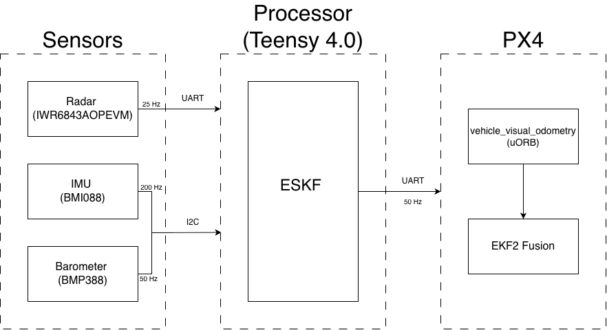
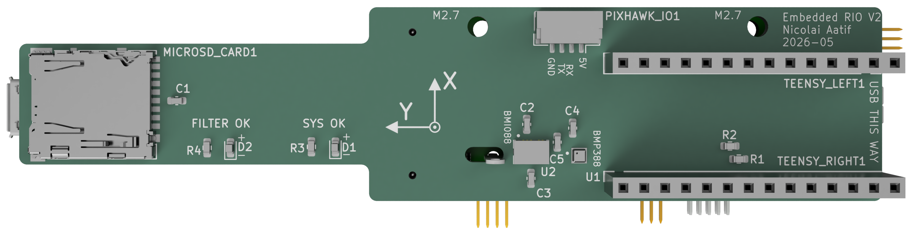
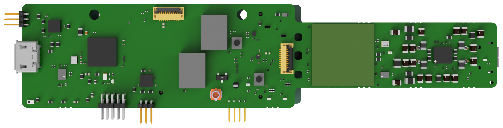
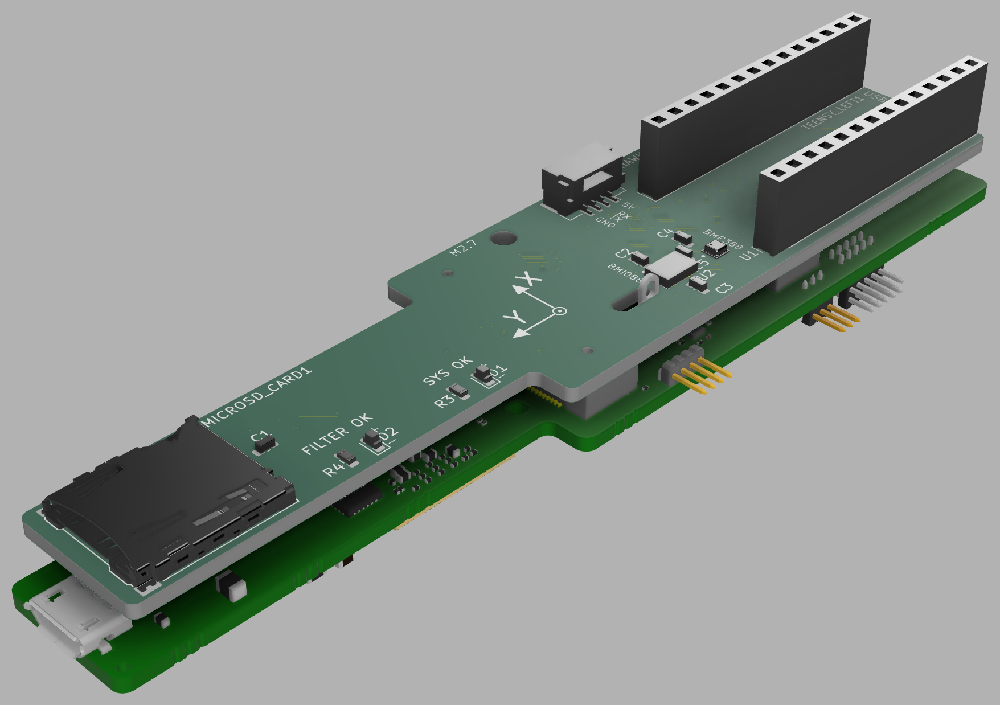
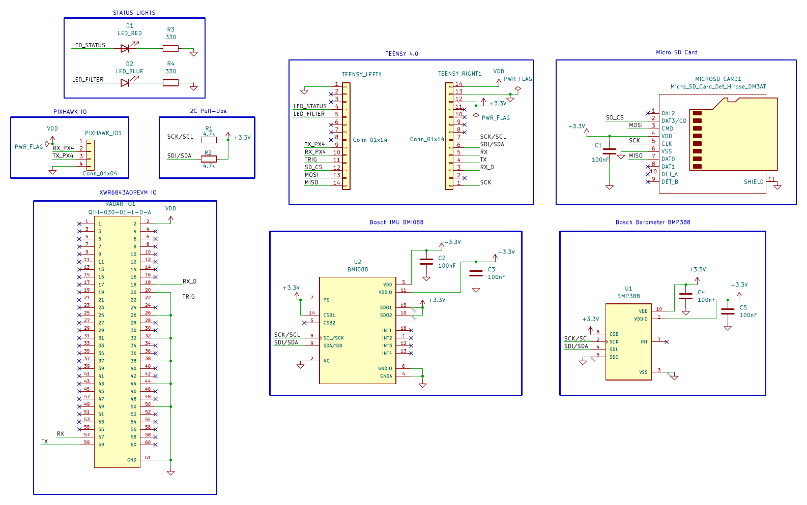
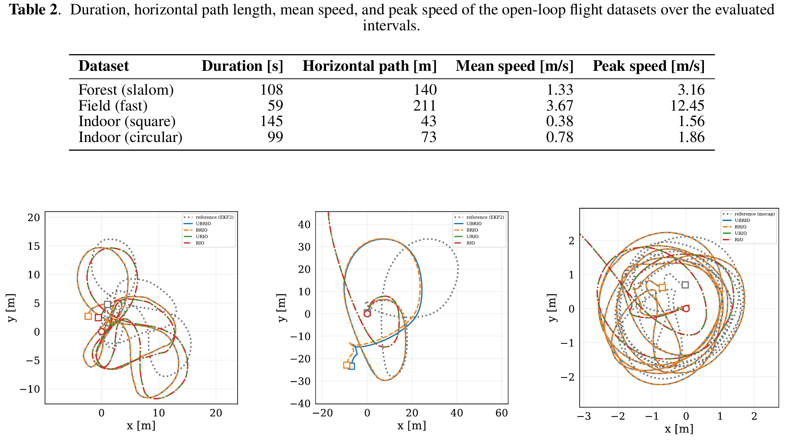
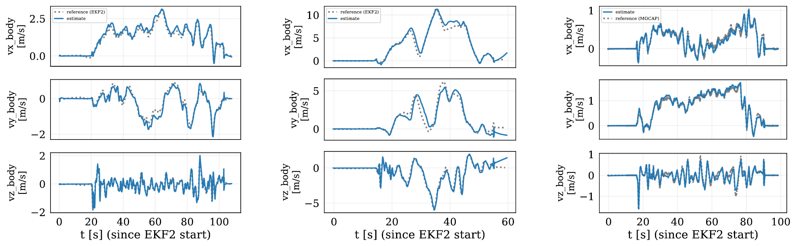
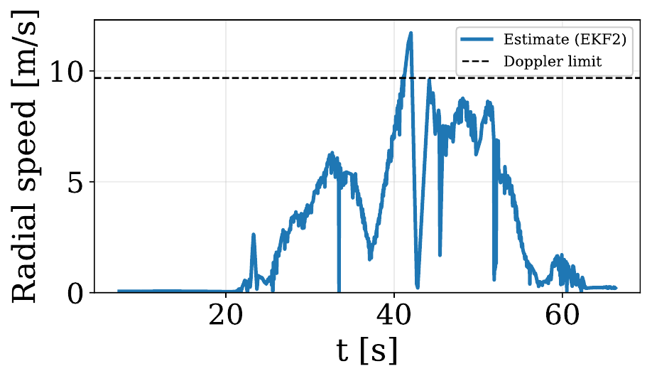
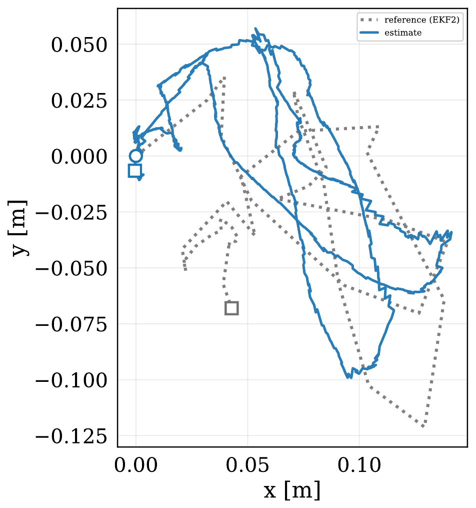

Embedded Bare-Metal
Radar-Inertial Odometry
Tightly coupled 6-DoF radar-inertial state estimation running entirely on a single-core 600 MHz microcontroller, enabling resilient closed-loop flight on an unmodified PX4 autopilot under strict SWaP-C constraints.
System Architecture & Hardware
A clean division of computation: on-chip radar signal processing, bare-metal microcontroller estimation, and downstream autopilot flight control.
Compute Partitioning

1. Radar SoC (TI IWR6843AOP): On-chip range/Doppler/AoA FFT → 25 Hz sparse point cloud
over UART.
2. Microcontroller (Teensy 4.0): 200 Hz IMU propagation, 50 Hz baro aiding, scalar radar
ESKF updates.
3. Flight Controller (Pixhawk 6C): 50 Hz MAVLink ODOMETRY fused into PX4 EKF2.
Sensor Carrier Module

Top view: Teensy 4.0, BMI088 6-DoF IMU (200 Hz SPI), and BMP388 barometer (50 Hz SPI).

Bottom view: TI IWR6843AOPEVM 60 GHz radar module with ±60° azimuth/elevation field of view.

CAD view: 3D printed carrier mount designed for 5-inch drone airframes.

Electrical schematic: Level shifting, SPI bus routing, and Pixhawk UART interface.
How RIO Works
A tightly coupled Error-State Kalman Filter (ESKF) processing individual radar detections without scan matching or intermediate 3D velocity fitting.
Inertial Propagation
High-rate IMU accelerometer and gyroscope measurements drive 3D kinematics to continuously propagate position, velocity, orientation, and covariance.
Scalar Radial-Speed Updates
Each radar return is processed individually along its line-of-sight bearing, avoiding fragile 3D velocity inversions from sparse point clouds.
Anchored Baro Aiding
Barometric pressure is differenced against the initial ground reference at takeoff, cancelling sensor offsets and eliminating vertical altitude drift.
Calibration & Gating
Statistical innovation gating rejects multipath and dynamic clutter, while the 6-DoF radar–IMU lever arm and rotation are calibrated online.
Experimental Validation
Flight validation across 5 datasets: outdoor forest slalom, high-speed open-field pass, indoor motion capture ground truth, and closed-loop PX4 position control.

Horizontal Trajectory Tracking
Accurately tracks agile flight in dense forest clutter, agrees qualitatively with GPS-aided EKF2 outdoors, and aligns closely with millimeter-level motion capture indoors.

3-Axis Velocity Observability
Doppler radial measurements directly constrain body velocity, reliably tracking rapid accelerations and high-rate turns without scan matching.

Doppler Aliasing Resilience (12.45 m/s)
During the high-speed pass, the drone reached 12.45 m/s, exceeding the radar's 9.68 m/s unambiguous limit. The χ² innovation gate rejected aliased returns, keeping estimation stable.

Closed-Loop PX4 Position Control
Streaming 50 Hz MAVLink odometry into PX4 EKF2 enabled stable position holding and responsive manual flight control without GPS, vision, or LiDAR.
Performance & Resource Footprint Summary
| Evaluation Metric | Experimental Value | Budget / Reference | Status |
|---|---|---|---|
| Indoor Circular APE / RPE | 0.51 ± 0.29 m / 0.27 m | Qualisys MoCap Ground Truth | < 3 % relative pose error |
| Indoor Square APE / RPE | 0.82 ± 0.45 m / 0.28 m | Qualisys MoCap Ground Truth | Consistent short-horizon tracking |
| IMU Prediction Timing | 233 μs (mean) | 5,000 μs nominal period (200 Hz) | < 5 % of nominal interval |
| Radar Frame Update Timing | 6.44 ms (mean) / 13.69 ms (worst) | 40.0 ms frame deadline (25 Hz) | Well within frame deadline |
| Flash Memory Footprint | 140.3 KB | 2,048 KB available (Teensy 4.0) | Only 6.9 % of Flash |
| Dynamic Memory (`malloc`) | 0 Bytes | Static linear-algebra allocation | Deterministic & fragmentation-free |
| Desktop Replay Parity | 0.05 − 0.09 m RMSE difference | Desktop single-precision compile | ×6 to ×16 smaller than APE |
Open-Source Code & Hardware
All firmware code, KiCad schematics, PCB layouts, and 3D print models are available on GitHub:
Firmware Repository
Bare-metal C++ estimator, TI radar parser, BMI088/BMP388 drivers, and MAVLink telemetry.
git clone https://github.com/ntnu-arl/embedded_rio.git
PCB & Hardware Repository
KiCad schematics, PCB layout, Gerber files, BOM, and 3D printable mechanical mounts.
git clone https://github.com/ntnu-arl/embedded_rio-pcb.git
Citation
@article{aatif2026embedded,
title = {Embedded Bare-Metal Radar-Inertial Odometry},
author = {Aatif, Nicolai Adil {\O}yen and Nissov, Morten and Alexis, Kostas},
journal = {arXiv preprint arXiv:2610.07278},
year = {2026},
url = {https://arxiv.org/abs/2610.07278}
}